LoRA — textures et ambiances de forêt
Textures, ambiances et références de sous-bois pour entraîner un LoRA : photos, scans PBR, gravures et jeux de données.
-
#1
 #1Image
#1Image Brume matinale dans une hêtraie, contre-jour
Brume matinale dans une hêtraie, contre-jourCC BY-NC 2.0 — 6000×4000, Vosges, octobre.
Sous conditions -
#2
 #2Image
#2Image Mossy forest floor 01 — PBR texture 4K
Mossy forest floor 01 — PBR texture 4KCC0, cartes diffuse, normal, roughness et displacement.
Libre -
#3
 #3Image
#3Image Bark 012 — écorce de chêne
Bark 012 — écorce de chêneCC0, 8K, scan photogrammétrique.
Libre -
#4
 #4Image
#4Image Forêt primaire de Białowieża, sous-bois en été
Forêt primaire de Białowieża, sous-bois en étéCC BY-SA 4.0 — Wikimedia Commons.
Sous conditions -
#5
 #5
#5 Dark fantasy forest LoRA (SDXL) — v3.2
Dark fantasy forest LoRA (SDXL) — v3.2Modèle communautaire ; licence d’usage du créateur à vérifier.
Sous conditions -
#6
 #6Vidéo
#6Vidéo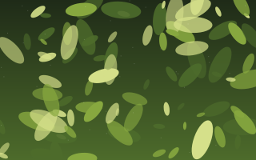
Tutoriel : entraîner un LoRA de textures avec kohya_ss (2025)Vidéo de 38 min : jeu de données, légendes, réglages.
À qualifier -
#7
 #7Image
#7Image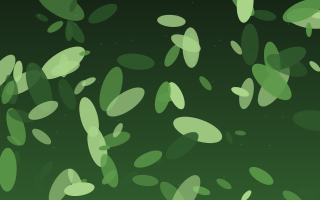
Fougères au sol, gros planLicence Pexels.
Libre -
#8
 #8huggingface.coPas de vignetteForest canopy dataset — 2 400 drone captures
#8huggingface.coPas de vignetteForest canopy dataset — 2 400 drone capturesCC BY-NC 4.0, annotations par essence.
Non commercial -
#9
#9Image
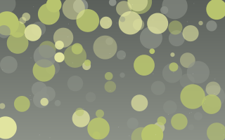
Non commercial -
#10
 #10Image
#10Image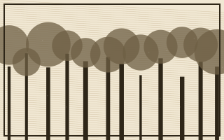
Gravure : La Forêt de Fontainebleau (1860)Domaine public, numérisation BnF.
Libre -
#11
#11Image
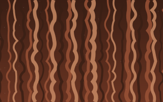
Sous conditions -
#12
#12ImageVignette indisponiblepolyhaven.comPine needles ground 02
CC0, 4K.
Libre -
#13
#13Image
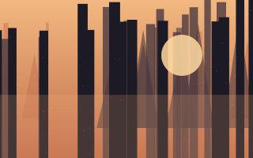
Sous conditions -
#14
 #14Image
#14Image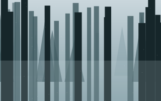
Stock photo: misty pine forest aerialLicence standard payante.
Payant -
#15
#15Image
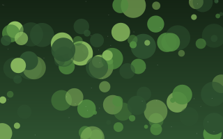
Moss 004 — mousse humideCC0, 4K.
Libre -
#16
#16Image
 Champignons bioluminescents (Mycena), nuit
Champignons bioluminescents (Mycena), nuitCC BY-SA 3.0.
Sous conditions -
#17
 #17Image
#17Image Concept art — forêt engloutie
Concept art — forêt engloutieŒuvre d’artiste : référence uniquement.
Non commercial -
#18
#18Image
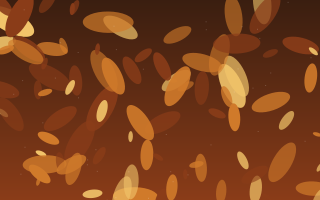
Libre -
#19
 #19reddit.comPas de vignetteÀ qualifier
#19reddit.comPas de vignetteÀ qualifier -
#20
#20Image
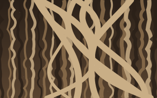
Libre -
#21
 #21PDFarxiv.orgPas de vignetteForest LoRA training notes (PDF)
#21PDFarxiv.orgPas de vignetteForest LoRA training notes (PDF)Rapport technique, 19 pages.
Libre -
#22
#22Image
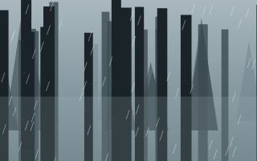
Libre -
#23
#23Image
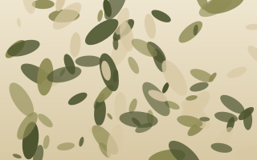
Herbier numérisé — feuilles de chêne (1890)CC BY 4.0, Muséum.
Sous conditions -
#24
#24Image
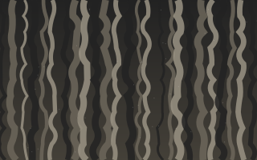
Textures écorce premium — pack 120Abonnement requis.
Payant -
#25
#25Image
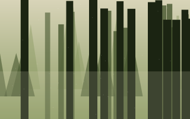
Old growth forest Olympic NPCC BY 2.0.
Sous conditions -
#26
 #26github.comPas de vignetteLibre
#26github.comPas de vignetteLibre -
#27
#27Image
 Moss covered stones river
Moss covered stones riverDomaine public.
Libre -
#28
#28Image
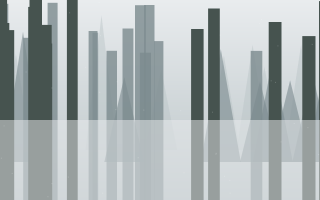
Forest fog HDRI 4KCC0, HDRI 16K disponible.
Libre -
#29
 #29Vidéo
#29Vidéo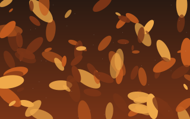
À qualifier -
#30
#30Image
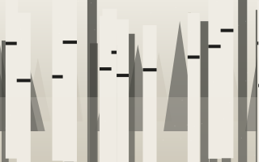
Écorce de bouleau, macroCC BY-NC-SA 2.0.
Non commercial